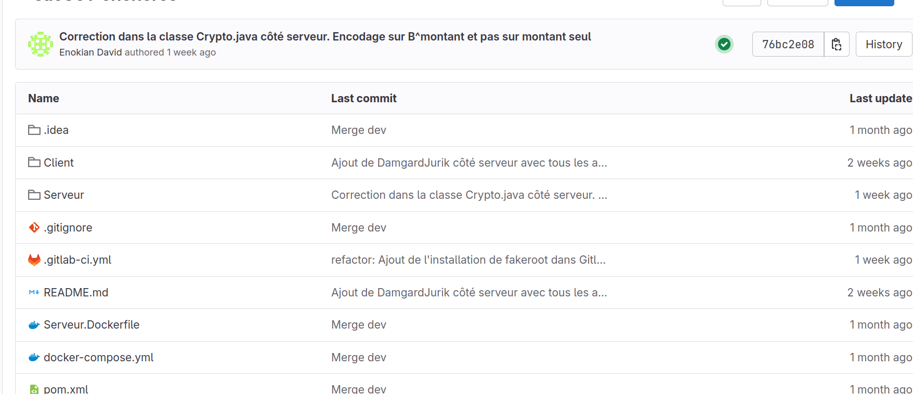
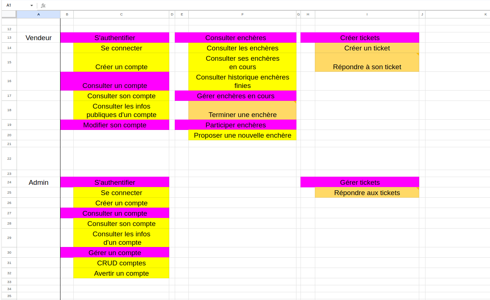
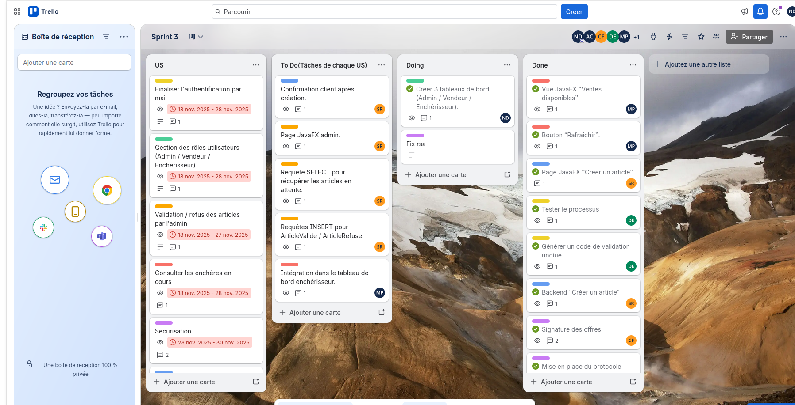

PORTFOLIO
Accueil
Portfolio d'Apprentissage
BUT Informatique - Référentiel Compétences Niveau 2
Focus BUT3 :
C2, C4, C5 (non vues en 3e année)
C2 - Optimiser des applications
FOCUS BUT3
Projet :
Enchères Sécurisées
- Phase Tests
AC Niveau 2 validés :
AC1
Analyser problème algorithmique
AC2
Comparer algorithmes (tri enchères)
AC3
Formaliser outils mathématiques

Preuve :
Pipeline GitLab Actions
C4 - Gérer des données
FOCUS BUT3
Projet :
Environnement Web Coworking
+
Enchères
AC Niveau 2 validés :
AC1
User Stories + diagrammes cas d'utilisation
AC3
Conception BD (formes normales 3NF)
AC2
Visualisation données (diagrammes dépendances)

Preuve :
User Stories
C5 - Conduire un projet
FOCUS BUT3
Projet :
Enchères Sécurisées
- Scrum Master
AC Niveau 2 validés :
AC1
Appréhender besoins client
AC2
Outils gestion projet
AC4
Démarche suivi projet

Preuve :
Backlog + rituels agiles (daily, rétrospectives)
Retour Portfolio Principal